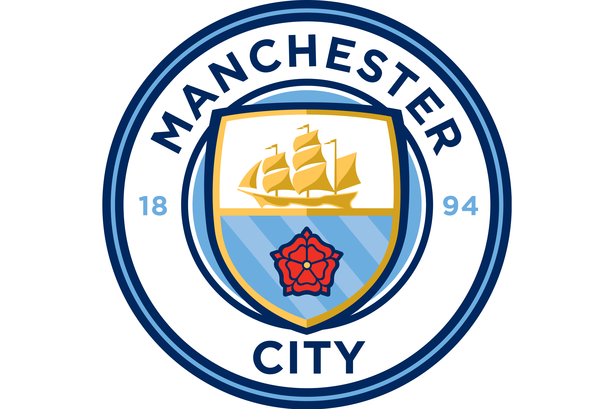
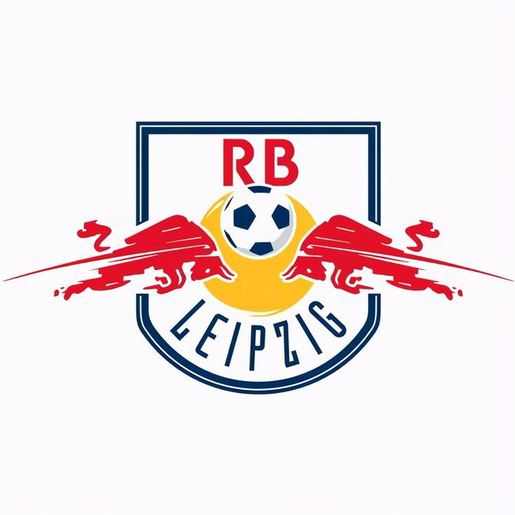
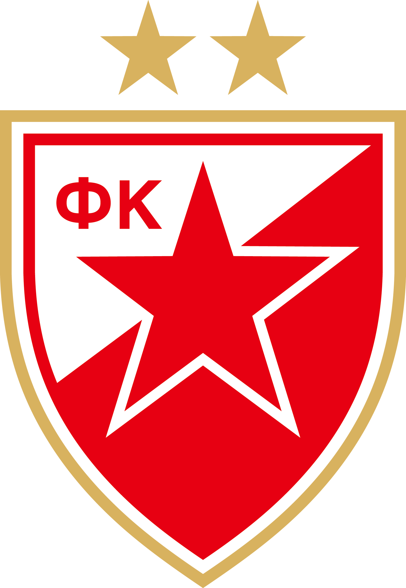

曼城

曼彻斯特城足球俱乐部（Manchester City F.C.），简称“曼城”，绰号“蓝月亮”，是一家位于英国曼彻斯特的足球俱乐部；前身为成立于1880年的“圣马可堂”，1887年改名为阿德维克，1894年更为现名。
截至2022/23赛季结束，曼城共夺得1次欧洲冠军联赛冠军、1次欧洲优胜者杯冠军、9次英格兰顶级联赛冠军、7次英格兰足总杯冠军和8次英格兰联赛杯冠军。
莱比锡

莱比锡红牛足球俱乐部（RB Leipzig）是一家位于德国萨克森州莱比锡的足球俱乐部，主场为红牛竞技场。该俱乐部是由功能饮料生产商红牛公司在2009年通过收购第五级别联赛球队马克兰斯泰特而得，并制定了一个10年内升入德国足球甲级联赛的计划。自从2009年建队以来，莱比锡在7年之内连跳四级，2016/17赛季登陆德甲赛场。
2021/22赛季，莱比锡红牛通过点球大战击败弗赖堡，夺得队史上第一个德国杯冠军；2023年8月，莱比锡红牛在慕尼黑安联竞技场3比0战胜拜仁慕尼黑，夺得队史首座德国超级杯冠军。
贝尔格莱德红星
